CS184/284A Spring 2025 Homework 4 Write-Up
Overview
In this homework, we built a cloth simulator based on a mass-spring system, advanced it through time with numerical integration, and added collision handling against spheres, planes, and the cloth itself. We also implemented several shaders to render the cloth and scene objects with different lighting and material effects. Working through the assignment made the relationship between physical parameters and visible motion much more concrete, especially how spring stiffness, density, damping, and collision constraints all combine to control the cloth's shape and stability.
Part 1: Masses and springs
We built the cloth as a row-major grid of point masses and then connected neighboring masses with springs. For each grid coordinate, we computed its position from the cloth's width and height, checked whether that coordinate appeared in the pinned list from the scene file, and created a PointMass with the corresponding pinned state. For horizontal cloths, each point mass is placed on a plane at y = 1; for vertical cloths, we place the masses in the xy-plane and add a very small random z-offset so the cloth does not start perfectly flat on top of itself.
After all point masses are created, we add springs by connecting each mass to previously created neighbors so the endpoints can be stored as stable pointers into the mass array. Structural springs connect each point mass to the mass above it and to the one on its left. Shearing springs connect the upper-left and upper-right diagonal neighbors. Bending springs connect point masses that are two positions away horizontally or vertically. The screenshots below show how those different spring families change the wireframe in scene/pinned2.json.


Part 2: Simulation via numerical integration
In this part, we implemented the full simulation step: force accumulation, Verlet integration, self-collision handling, collisions with external primitives, and finally a Provot-style spring constraint to keep the cloth numerically stable. At the start of each step we reset every point mass's accumulated force to zero, add the external forces coming from the acceleration vector, and then add spring forces using Hooke's law. Structural and shearing springs use the scene's ks directly, while bending springs use a reduced spring constant of 0.2 * ks so they resist folding without being unrealistically stiff.
Once all forces are accumulated, we update each unpinned point mass with Verlet integration. The new position is the current position plus a damped copy of the previous displacement, plus the acceleration term scaled by delta_t^2. In code, the damping factor is implemented as 1 - damping / 100, so larger damping values reduce how much of the previous velocity-like displacement is carried forward. After integration, we enforce the 10% stretch limit by checking every spring and correcting any spring longer than 1.1 * rest_length. If both endpoints are free we split the correction equally; if one endpoint is pinned, the unpinned endpoint absorbs the full correction.
Default parameters
Unless otherwise noted, the comparisons below use the default parameters from the provided scenes: ks = 5000, density = 150, and damping = 0.2.

Effect of spring constant ks
The spring constant directly controls how strongly the springs resist deviation from their rest lengths. With a very low ks, the spring forces are weak, so gravity and collisions can pull neighboring point masses farther apart before the cloth pushes back. Visually, that makes the cloth sag more, stretch more, and form softer folds. With a high ks, the springs resist deformation much more aggressively, so the cloth behaves more like a stiff sheet: it keeps its shape better, wrinkles less deeply, and settles into a tighter drape.

ks = 5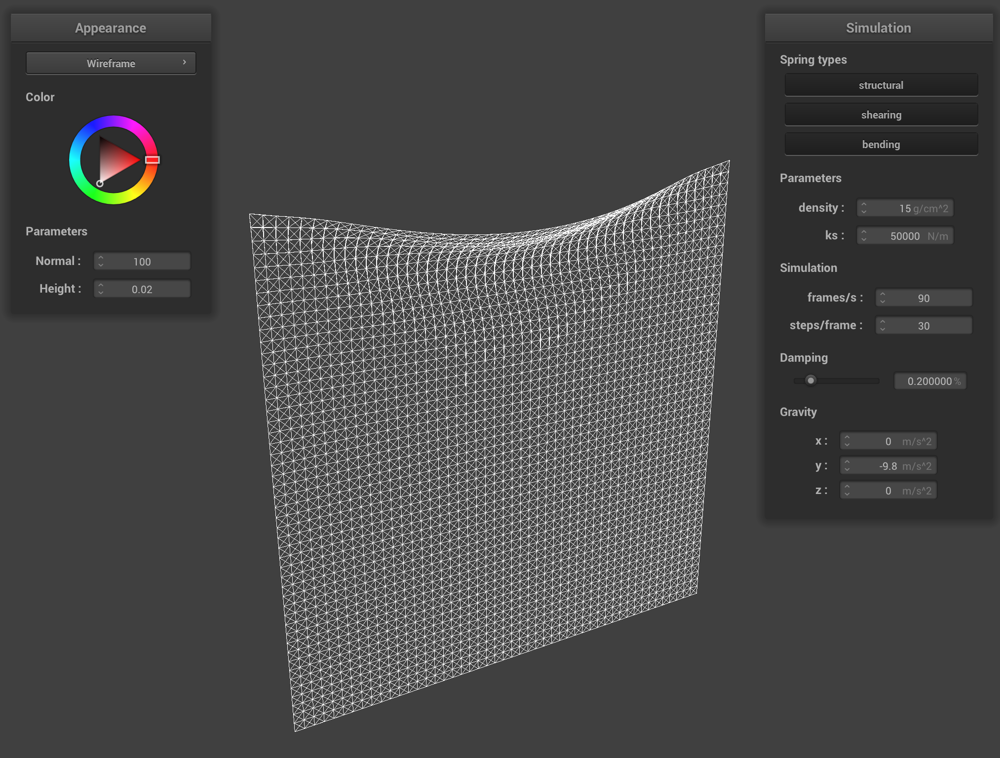
ks = 50000Effect of density
In this implementation, density changes the mass assigned to each point mass through the formula based on cloth area and grid resolution. Since gravity is supplied as an acceleration, the gravitational acceleration itself stays the same, but the spring forces are divided by a larger mass when density increases. As a result, a higher-density cloth responds more sluggishly to the same spring forces, droops more under its own weight, and tends to form deeper folds. A lower-density cloth reacts more quickly to the springs and therefore looks tighter and less heavy.
These screenshots compare low- and high-density runs from the same initial state. The low-density cloth keeps a lighter, more elastic-looking shape, while the high-density cloth sinks farther before the springs can pull it back into equilibrium.


Effect of damping
Damping controls how much of the previous time step's displacement is preserved in the Verlet update. Because the code multiplies the previous displacement by 1 - damping / 100, increasing damping removes more of that carry-over motion from one step to the next. Lower damping therefore lets the cloth keep more momentum, which makes it swing and oscillate longer. Higher damping suppresses those oscillations sooner and produces a faster, more heavily damped approach to the resting state.
These screenshots compare two damping settings. The lower damping run preserves more of the cloth's previous motion, so the fabric continues to sway and bounce longer. The higher damping run reduces that motion more aggressively, so the cloth settles sooner and looks less lively.


Final resting state
The screenshot below shows the shaded cloth from scene/pinned4.json in its final resting state.

Part 3: Handling collisions with other objects
For sphere collisions, we first compute the vector from the sphere center to the point mass's current position and measure its length. If that distance is less than or equal to the sphere radius, the point mass has penetrated the sphere. We then normalize that center-to-point vector, scale it by the sphere radius, and add it back to the sphere center to get the tangent point on the sphere surface. The correction vector is computed from the point mass's previous position to that tangent point, and the final position is set to the previous position plus that correction scaled by 1 - friction.
For plane collisions, we compute the signed distance of both the current position and the previous position from the plane using a dot product against the plane normal. If those two signed distances have the same sign, the point mass stayed on one side of the plane and there is no collision to resolve. Otherwise, the segment from the previous position to the current position crossed the plane. We project the current position onto the plane to get the tangent point, offset that point slightly by a small SURFACE_OFFSET in the direction of the side the point mass came from, and then move the point mass to the previous position plus the friction-scaled correction.
In the simulation loop, we apply these collision routines to every point mass against every collision object after integration and self-collision handling. This keeps the cloth outside the sphere and above the plane while still allowing friction to reduce sliding.

ks = 500
ks = 5000 (default)
ks = 50000
With ks = 500, the cloth drapes loosely over the sphere and falls into deeper folds because the springs do not strongly resist stretching. At the default ks = 5000, the cloth still conforms to the sphere but holds itself together more cleanly, producing a more natural balance between sagging and stiffness. With ks = 50000, the cloth becomes much more rigid and resists wrapping around the sphere, so the result looks closer to a stiff sheet than to soft fabric.

Part 4: Handling self-collisions
For self-collisions, we use a spatial hash so each point mass only needs to check nearby masses instead of comparing against the entire cloth. Every time step, we rebuild a hash table that maps a 3D box to the point masses inside it. The box dimensions are based on the cloth resolution: the box width is 3 * width / num_width_points, the box height is 3 * height / num_height_points, and the box depth uses the larger of those two values. To hash a position, we snap each coordinate down to the corresponding box corner and combine those snapped coordinates with large multipliers to produce a bucket key.
To resolve self-collision for a point mass, we look up the other masses in the same spatial-hash bucket, skip the point mass itself, and test whether any candidate is closer than 2 * thickness. For every candidate that is too close, we compute a correction in the direction that pushes the two masses apart by the missing separation distance. We accumulate all such corrections, average them, divide by simulation_steps to keep the correction stable over substeps, and add the result to the point mass position.


ks (500 N/m)
All of these images are taken shortly after the cloth begins colliding with itself. Increasing density makes the cloth effectively heavier relative to the spring forces, so it collapses into deeper folds and tends to bunch up more aggressively. Decreasing ks weakens the springs, so the cloth offers less resistance to folding and compression and therefore crumples more dramatically. The baseline case sits between those two extremes, with a more balanced amount of folding and a less collapsed shape.
Part 5: Shaders
A shader program is a small GPU program that runs as part of the graphics pipeline. Instead of computing the appearance of the scene on the CPU one vertex or pixel at a time, the GPU runs the shader in parallel across many vertices and fragments, which makes it practical to apply lighting and material calculations to the entire cloth mesh every frame.
The vertex shader runs once per vertex. Its job is to transform vertex positions into clip space for rasterization and to pass along data such as world-space position, normal, tangent, and texture coordinates. After rasterization interpolates those outputs across each triangle, the fragment shader runs once per fragment and computes the final color. In this assignment, the fragment shader is where most of the visible material effects happen: texture lookup, normal perturbation, Blinn-Phong lighting, and environment-map reflection.
Our Blinn-Phong shader adds three terms together. The ambient term provides a constant base illumination so surfaces are still visible even when they are not directly lit. The diffuse term uses the cosine between the surface normal and the light direction, n dot l, so surfaces facing the light appear brighter. The specular term uses the cosine between the normal and the half-vector, n dot h, raised to a shininess exponent to produce concentrated highlights. In our implementation, the diffuse and specular terms are also attenuated by inverse-square distance to the light, which makes the shading look more physically plausible as the light moves farther away.
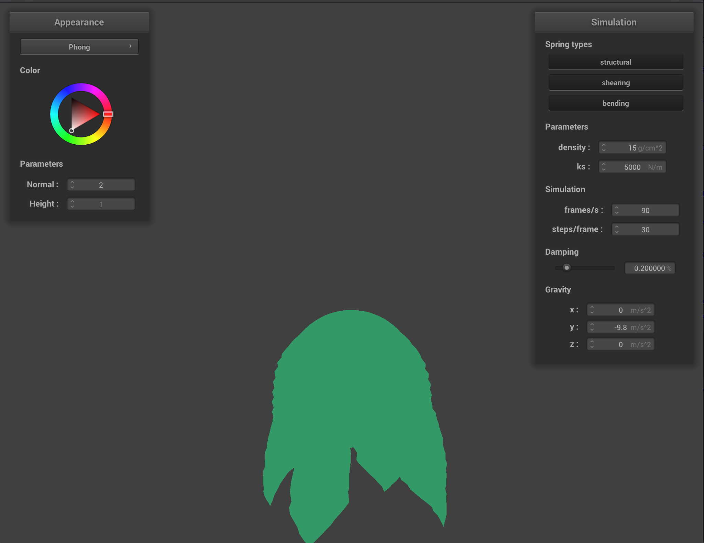
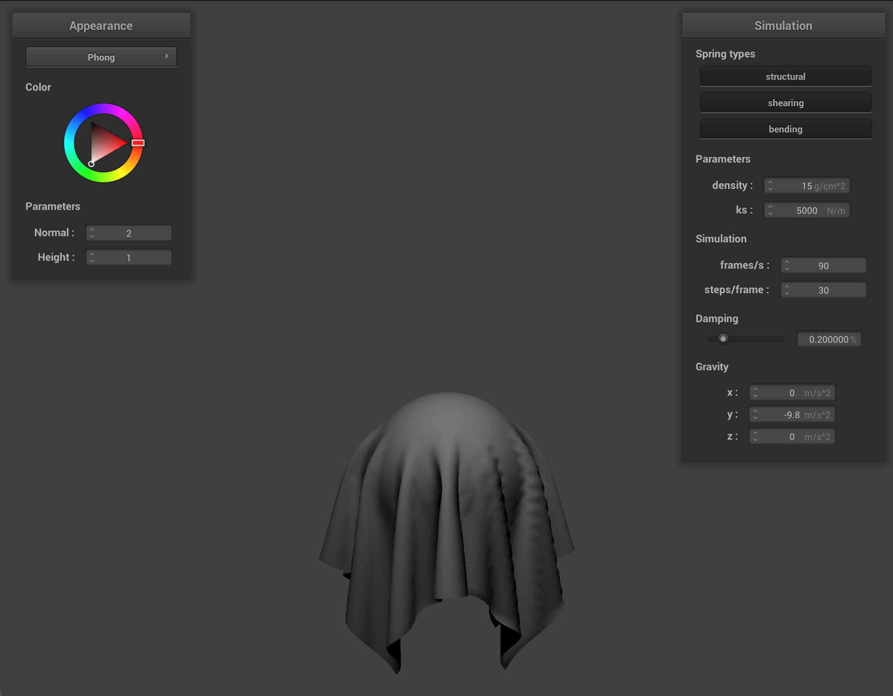
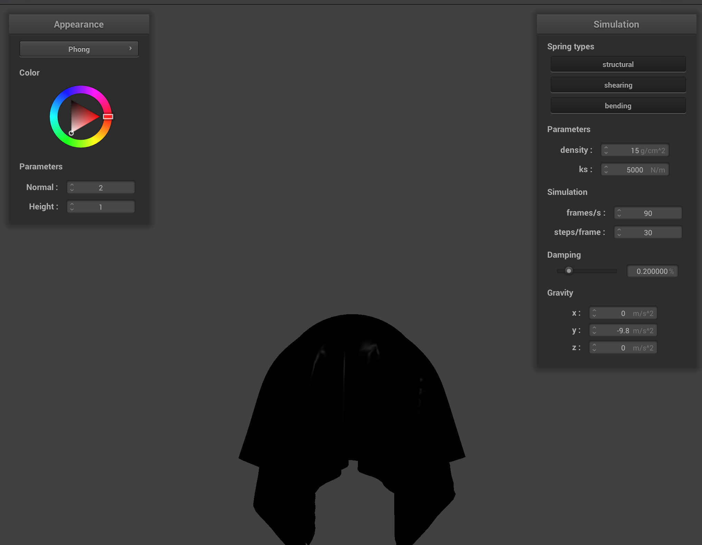
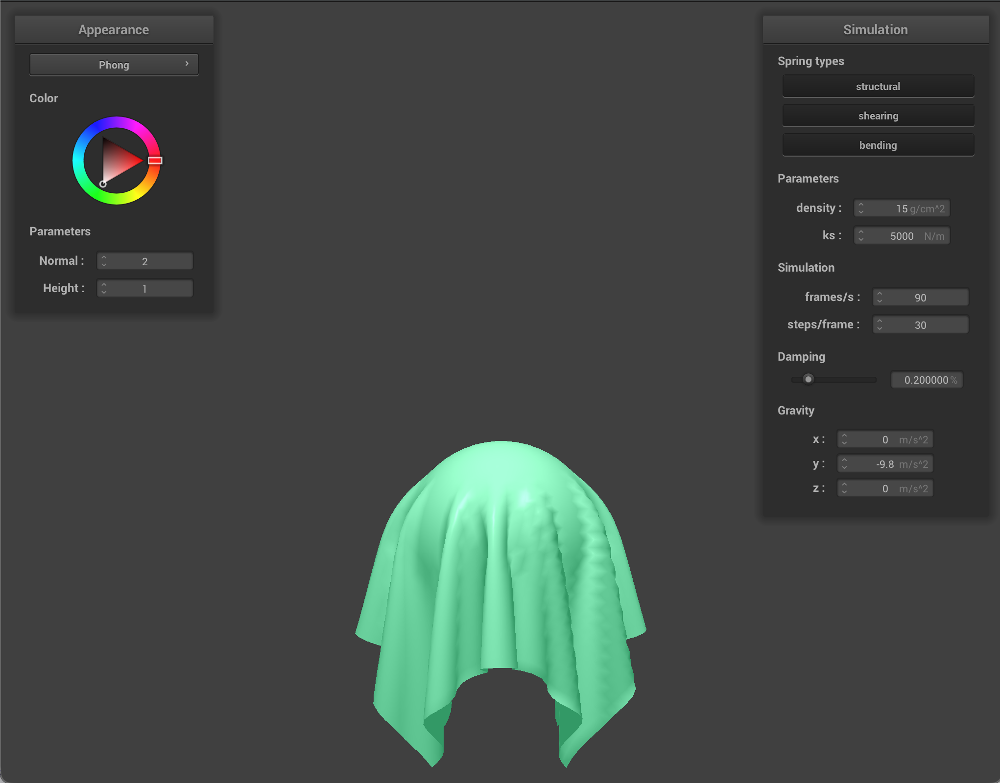
Texture Mapping
The texture mapping shader is the simplest material shader in the project. The vertex shader passes along the UV coordinates, and the fragment shader directly samples u_texture_1 at those UVs and outputs the sampled color. Because of that, the cloth's appearance comes directly from the image data stored in the texture rather than from a hand-written lighting equation or a single constant color. For our custom texture render, we used son.png, which gets mapped directly across the cloth surface through the mesh UV coordinates.
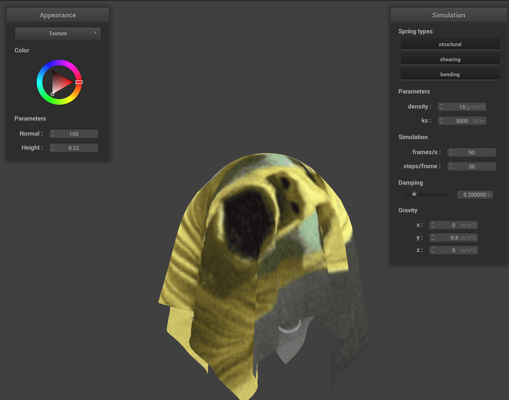
son.png.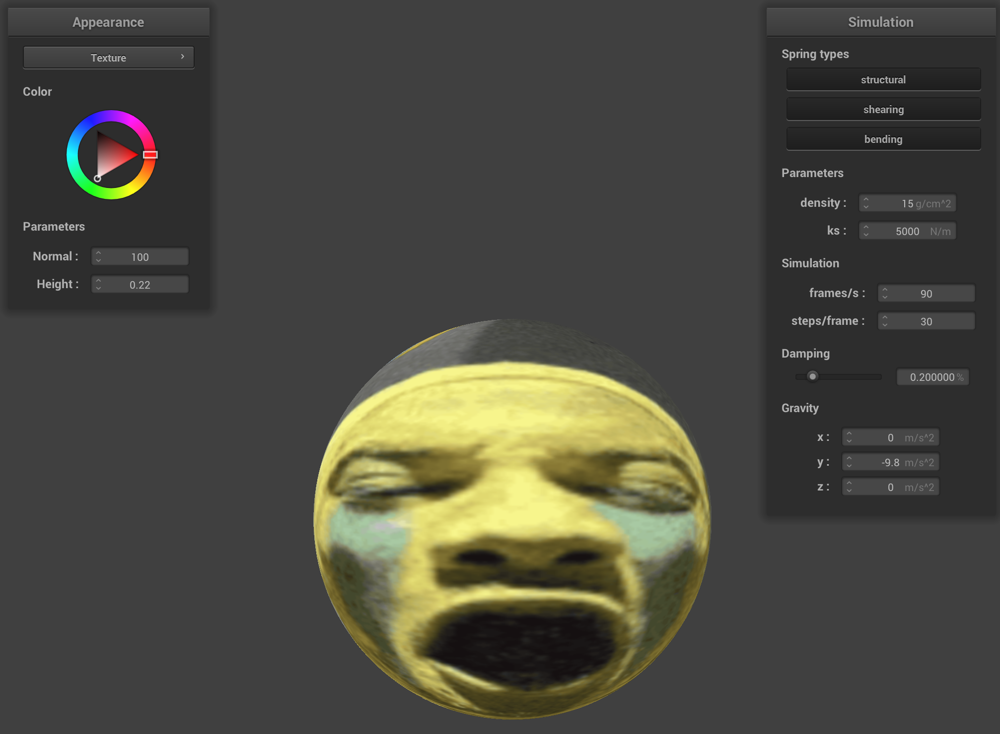
son.png.Bump and Displacement Mapping
Bump mapping and displacement mapping both start from the same idea: interpret a texture as a height field and use that height field to create small-scale surface detail. In our implementation, both shaders sample the texture bound to u_texture_2, which we set to texture_3.png for these renders, and estimate local height derivatives by comparing the current texel against neighboring texels offset by one pixel in the u and v directions. Those derivatives are converted into a local normal ( -dU, -dV, 1 ), which is then transformed into world space through a TBN matrix built from the interpolated tangent, bitangent, and normal.
The key difference is where that height information is applied. In the bump shader, the geometry stays fixed and only the normal used for lighting is modified, so the object looks more detailed without its silhouette changing. In the displacement shader, the vertex shader also moves each vertex along its normal by an amount proportional to the sampled height. That means displacement changes both the shading and the actual geometry, which becomes especially visible along the object's outline and on coarsely tessellated meshes.
In the final renders, bump mapping produces the illusion of fine detail while leaving the underlying object unchanged, so it tends to look smoother and more stable on coarse meshes. Displacement mapping creates a stronger sense of depth because the geometry itself is moved, and that makes the effect more convincing when the mesh has enough vertices to support those geometric offsets.
In our results, this difference is easy to see with the brick texture from texture_3.png. The bump-mapped objects preserve a smooth underlying shape and show the brick pattern mainly through lighting variation. The displacement-mapped objects, by contrast, visibly push the surface outward and inward according to the height map. On the sphere this changes the outline directly, and on the cloth it makes the folds and ridges look more physically embossed rather than merely shaded.
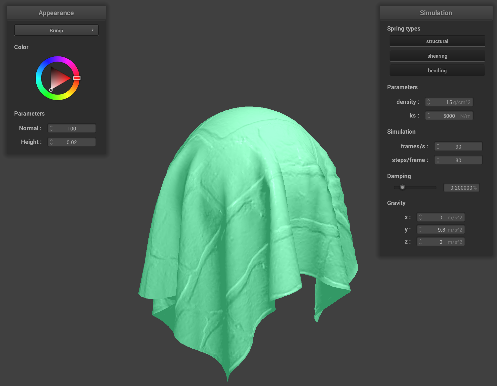
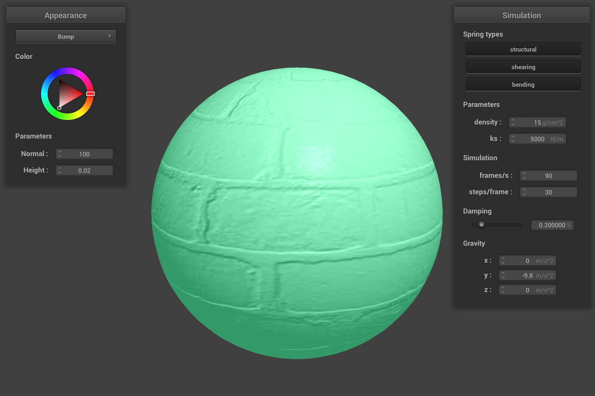
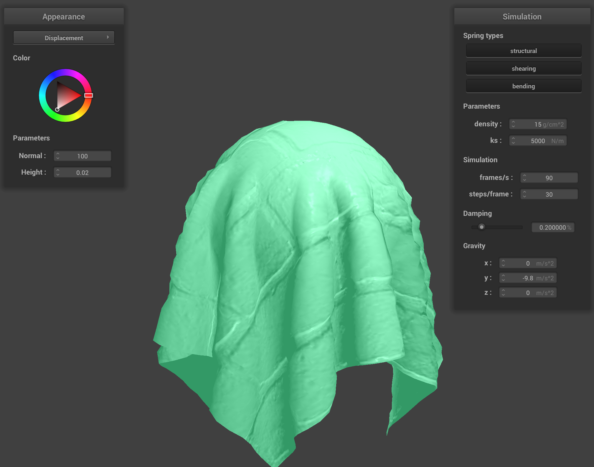
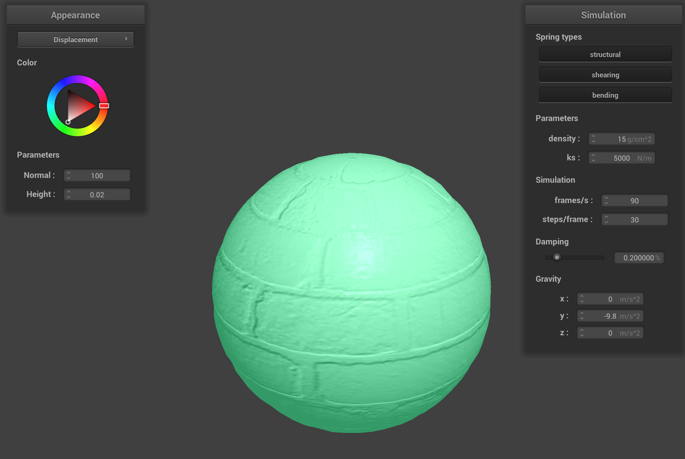
Sphere Mesh Coarseness Comparison
This comparison highlights the different dependence that bump and displacement mapping have on tessellation. For the coarse-versus-fine displacement renders, we increased the height scaling to 0.3 so the geometric change would be easy to see. When the sphere is rendered with a coarse mesh such as -o 16 -a 16, the displacement is applied to a relatively small number of vertices, so the result becomes strongly faceted and stepped. On a dense mesh such as -o 128 -a 128, the same height map is spread across many more vertices, so the displaced surface can follow the brick pattern much more faithfully and the shape looks fuller and more continuous.
In our bump-mapped renders, the coarse and fine spheres look very similar. Both show the same brick pattern through changes in lighting, and in both cases the silhouette remains perfectly spherical because bump mapping does not move the actual geometry. The fine sphere produces slightly smoother highlight transitions and a somewhat more even-looking pattern, but the difference is subtle. Bump mapping perturbs shading normals rather than vertex positions, so mesh coarseness matters much less here than it does for displacement mapping.
The displacement renders show the opposite behavior. On the coarse sphere, the mesh resolution is too low to represent the height field smoothly, so the displaced result looks blocky and tiered. On the fine sphere, the surface can follow the texture much more closely, so the brick pattern appears far more detailed and the silhouette becomes noticeably rougher and more natural. This makes the coarse-versus-fine contrast much stronger for displacement than for bump mapping.
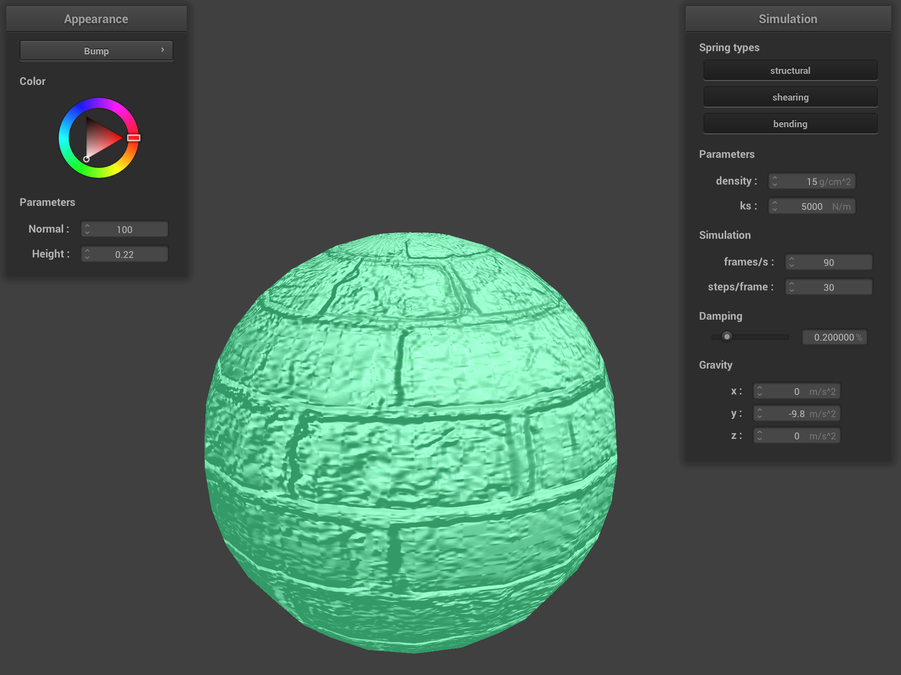
-o 16 -a 16 and height 0.22.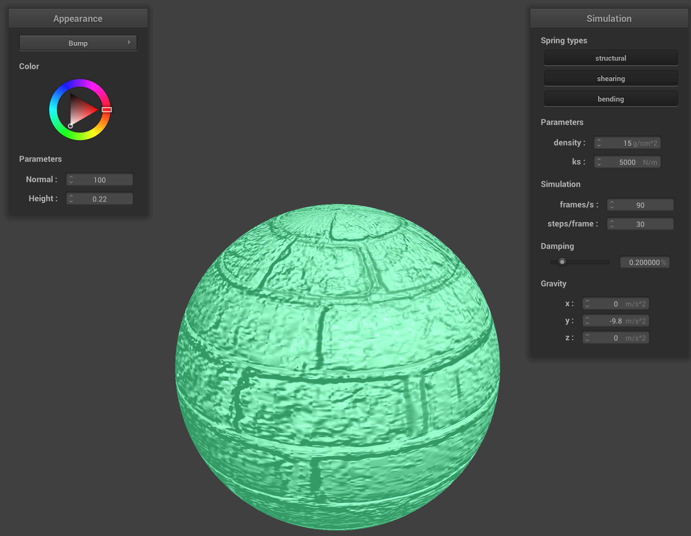
-o 128 -a 128 and height 0.22.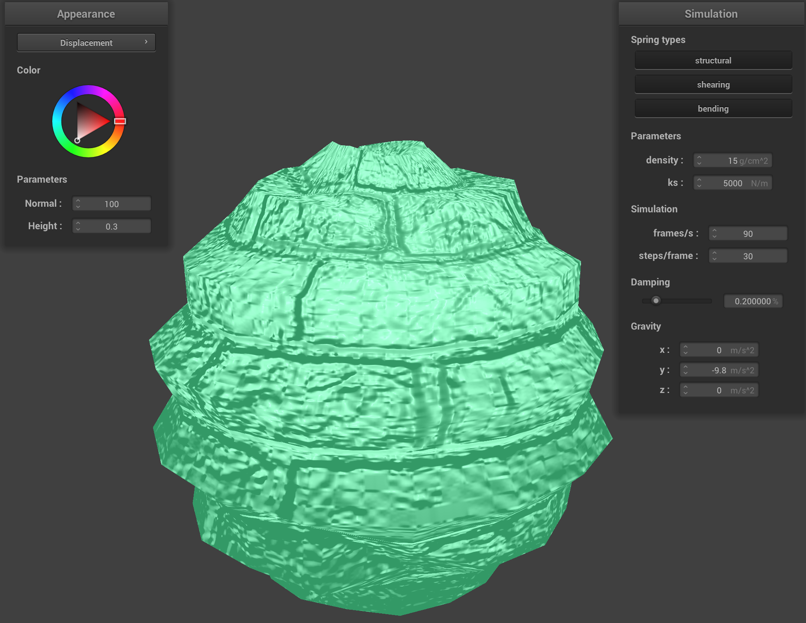
-o 16 -a 16 and height 0.3.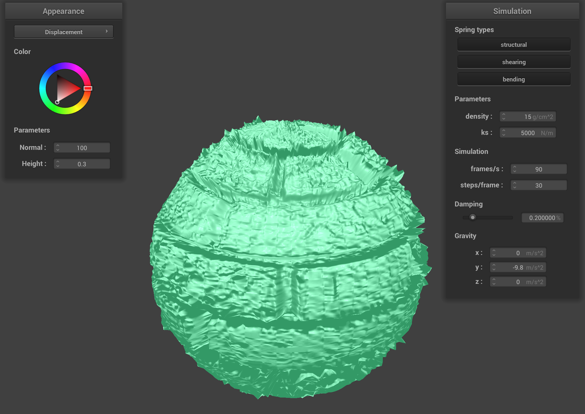
-o 128 -a 128 and height 0.3.Mirror Shader
The mirror shader uses environment mapping with a cube map. In the fragment shader, we compute the outgoing view direction from the surface point toward the camera, reflect that direction around the surface normal, and use the reflected direction to sample the cube map texture. The sampled cube-map color becomes the fragment color, which makes the object look reflective even though we are not tracing real rays through the scene.
This shader tends to look especially clean on the sphere because its normals vary smoothly, producing smooth reflections. On the cloth, the reflected environment bends across the folds and wrinkles of the simulated fabric, which makes the surface shape easy to read.
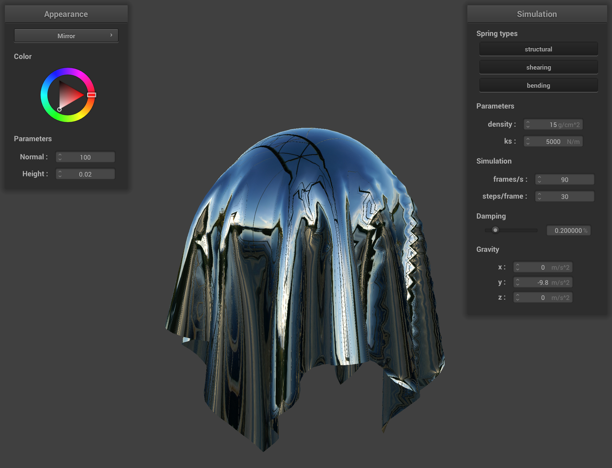
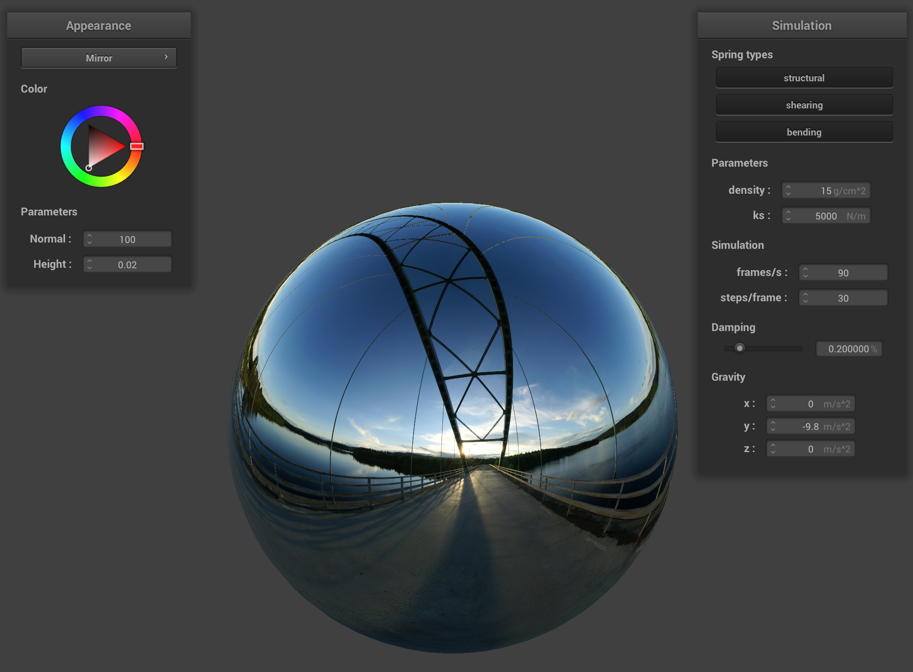
Custom Shader
For the custom shader, we combined several ideas from the earlier shaders into a more stylized material. The custom vertex shader performs a displacement step similar to the displacement-mapping shader: it samples the brick height map from u_texture_2, stores that value in v_height, and offsets the vertex along its normal before projection. The custom fragment shader then recomputes a bumped normal from the same height map using the TBN basis, so the surface gets both large-scale geometric displacement and finer lighting detail from the same underlying texture.
The final color is built by blending several texture sources together. We start with a height-based color ramp, then mix in repeated samples of son.png through u_texture_1, add additional variation from a noise texture and a striped texture, and layer in another direct son.png sample through u_texture_5. That combined surface color is then multiplied by the selected base color from the UI. On top of the color composition, the shader adds diffuse and specular lighting, a rim-light term that emphasizes silhouettes, and a small cube-map reflection term. The result is a more graphic and collage-like material than the standard Blinn-Phong shader: the brick height map controls shape and relief, while the image textures and lighting layers control the stylized surface appearance.
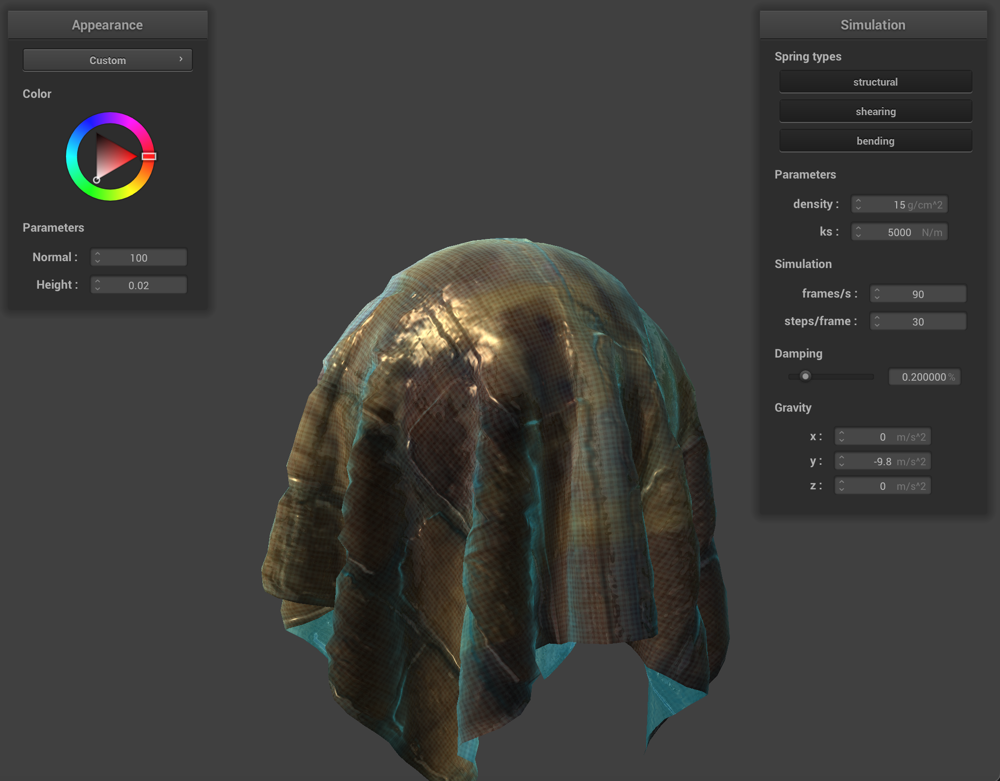
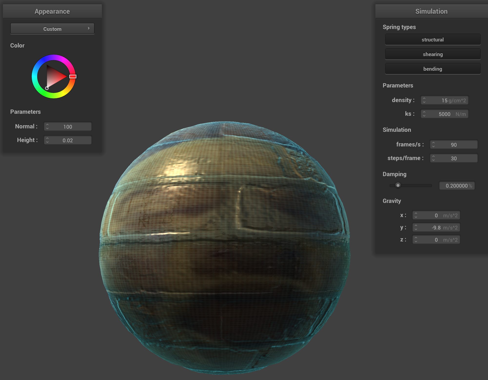